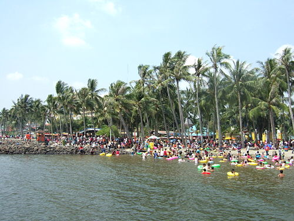

Jakarta covers 661.23 km2 (255.30 sq mi), the smallest among any Indonesian provinces. However, its metropolitan area covers 6,392 km2 (2,468 sq mi), which extends into the two bordering provinces of West Java and Banten. The Greater Jakarta area includes three bordering regencies (Bekasi Regency, Tangerang Regency and Bogor Regency) and five adjacent cities (Bogor, Depok, Bekasi, Tangerang and South Tangerang).
Jakarta is situated on the northwest coast of Java, at the mouth of the Ciliwung River on Jakarta Bay, an inlet of the Java Sea. It is strategically located near the Sunda Strait. The northern part of Jakarta is plain land, some areas of which are below sea level, and subject to frequent flooding. The southern parts of the city are hilly. It is one of only two Asian capital cities located in the southern hemisphere (along with East Timor's Dili). Officially, the area of the Jakarta Special District is 661.23 km2 (255 sq mi) of land area and 6,977 km2 (2,694 sq mi) of sea area. The Thousand Islands, which are administratively a part of Jakarta, are located in Jakarta Bay, north of the city.
Jakarta lies in a low and flat alluvial plain, ranging from −2 to 91 m (−7 to 299 ft) with an average elevation of 8 m (26 ft) above sea level with historically extensive swampy areas. Some parts of the city have been constructed on reclaimed tidal flats that occur around the area. Thirteen rivers flow through Jakarta. They are Ciliwung River, Kalibaru, Pesanggrahan, Cipinang, Angke, Maja, Mookervart, Krukut, Buaran, West Tarum, Cakung, Petukangan, Sunter River and Grogol River. They flow from the Puncak highlands to the south of the city, then across the city northwards towards the Java Sea. The Ciliwung River divides the city into the western and eastern districts. These rivers, combined with the wet season rains and insufficient drainage due to clogging, make Jakarta prone to flooding.
Moreover, Jakarta is sinking about 5 to 10 cm (2.0 to 3.9 in) each year, and up to 20 cm (7.9 in) in the northern coastal areas. After a feasibility study, a ring dyke known as Giant Sea Wall Jakarta is under construction around Jakarta Bay to help cope with the threat from the sea. The dyke will be equipped with a pumping system and retention areas to defend against seawater and function as a toll road. The project is expected to be completed by 2025. In January 2014, the central government agreed to build two dams in Ciawi, Bogor and a 1.2 km (0.75 mi) tunnel from Ciliwung River to Cisadane River to ease flooding in the city. Nowadays, a 1.2 km (0.75 mi), with capacity 60 m3 (2,100 cu ft) per second, underground water tunnel between Ciliwung River and the East Flood Canal is being worked on to ease the Ciliwung River overflows. In 2023, the New York Times reported that in some places Jakarta is sinking up to 12 inches (30 cm) annually.
Environmental advocates point out that subsidence is driven by the extraction of groundwater, much of it illegal. Furthermore, the government's lack of strict regulation amplifies the issue as many recently built high-rise buildings, corporations, and factories around Jakarta opt for illegally extracting groundwater. In fact, in a recent inspection of 80 buildings in Jalan Thamrin, a busy road lined with skyscrapers and shopping malls, 56 buildings had a groundwater pump, and 33 were pumping groundwater illegally. This could be halted by stopping extraction (as the city of Tokyo has done), increasing efficiency, and finding other sources for water use. Moreover, increasing regulation through higher taxes or limiting groundwater pumping has proven to help cities like Shanghai, Tokyo, and San Jose relieve their subsidence issue. The rivers of Jakarta are highly polluted and currently unsuitable for drinking water.
Jakarta faces significant air pollution, particularly during the dry season from August to December. Dry air during this period allows pollutants to remain suspended in the atmosphere for extended periods, contributing to poor air quality.